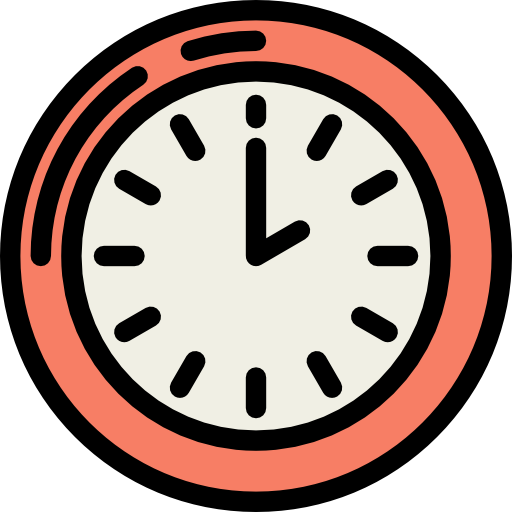
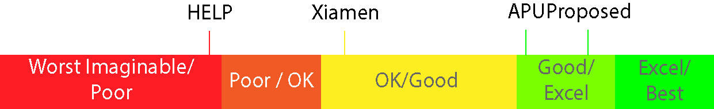

A study done in the perspective of Malaysian youths
UX Research
Background
Assessing usability of Malaysian university websites from the
perspective of teenagers
University websites in developed countries are usually
well-developed with usability in mind. The same cannot be said for
developing countries. This is supported by more research done in
developing countries than developed ones. There are many research
done using undergraduate and graduate students. Lacking research
is available for students interested in admitting to a university
or are going to graduate high school.
This study assessed
usability of three Malaysian university websites.
A design with improvements was proposed in
reference to one of the three websites, then compared.
Problem
Usability of Malaysian university websites
Malaysian universities websites often suffer from bad usability. A
research done by Zurida et al. (2020) investigated five private
university websites and found common usability issues within.
Coupled with the poor digital literacy of youths in Malaysia due
to lack of push on relevant IT courses by the government, these
youths will find difficulties in querying necessary information
for admission such as scholarship, programmes, fees, etc.
Tools
Figma (Design)
Maze (Card sorting)
React JS (Implementation)
Github pages (Hosting)
Team
1 researcher
1 supervisor
My role
UX research
UI design
Front-end developer
Timeline
Overall: 13 weeks
Research: 8 weeks
Design implementation: 2+ weeks
Challenge
Usability evaluation conducted in remote conditions
This research was done during the COVID pandemic. Since data
collection is done remotely, there were difficulties pertaining to
time taken done over tasks, behavioural expressions and most
importantly, reliable Internet connection of participants.
Design process
Design Science Research Methodology
The Design Science Research (DSR) Methodology, developed by Takeda
et al. (1990) was used as a foundation to construct this research
process.
1
2
3
4
5
Awareness of problem
Suggestion
Development
Evaluation
Conclusion
Awareness of Problems
Comparative Usability Evaluation
This phase evaluates three university websites. User interviews
were conducted, in which participants attempt to accomplish a set
of given tasks. Five participants were recruited, aged 16 - 19. A
total of eight tasks related to information searching and
navigation were given to each participant.
The three university websites were HELP, Xiamen University and
APU.
Metrics collected followed guidelines of ISO 9126-4 and the use of
SUS scoresheets. The metrics are listed below.
ISO 9126-4(1)
Effectiveness
Tasks are evaluated with 0 (incomplete) and 1 (complete).
ISO 9126-4(2)
Efficiency
The time taken for each task is recorded.

ISO 9126-4(3)
Satisfaction
Each task is evaluated upon satisfaction, using a Likert
scale from 0-5.
Evaluation
System Usability Scale
Each university is evaluated using a positively-oriented SUS
sheet.
Suggestion
Analysis of Data Collection and Improvements
The data collected was compiled and analysed. Issues were arranged
and suggestions to improvements were drafted. The following shows
a few issues that dramatically affected participants' performance
(based on the metrics).
Legibility of font - small and overwhelmingly large text
sizes.
Information density - packed information affecting querying
performance.
Organisation and navigation - pages within pages within pages
with vague titles.
Development
Developing a Design with Better Usability
With the suggestions in place, the next few steps are to construct
the proposed design. The proposed design is based on one of the
website randomly selected, Xiamen University Website. Once
designed, it went through the same evaluation as previously done,
using the same set of participants with the focus on this design
only.
A brief description of the preparation is listed below.
001
Improvements
Each problem collected from the previous phase was tabulated
and analysed. Suggestions to improve or remedy these
problems were drafted and finalised.
002
User personas
A set of user personas were created to reflect the
participants age group and potential students.
003
Information Architecture
To reorganise the structure, the participants were asked to
join a card sorting activity. This is done using the Maze
software.
004
High Fidelity Prototyping
Popular heuristics from Nielsen, Shneiderman and other laws
were incorporated during planning. Prototypes were
constructed using Figma.
Two of the three websites had lower quartile rankings (HELP under
Poor and Xiamen OK) as designated by the SUS score quartiles.
Participants had a difficult time solving tasks even though they
were understood clearly. Time taken for each task can range from 3
seconds to 180 seconds (the set upper limit). The last website was
under the good quartile. However, the results from ISO 9126-4 were
still poor.
Conclusion - Result 2
Results from Comparing Proposed Design and Reference Website
There was an improvement on the proposed over the reference
website. It fell under the good quartile. The largest difference
seen was the time taken to accomplish each task, from 2 seconds to
125 seconds. Task completion rate and satisfaction improved
dramatically.

In accordance to Bangor et al., 2009
Future Recommendations
Improvements to this study
This study has several flaws. To increase accuracy, future
research could use metrics from heatmaps, mouse clicks and so on.
This study should be repeated multiple times while filling more
content within the design to investigate the significance in the
number of pages, information, etc.